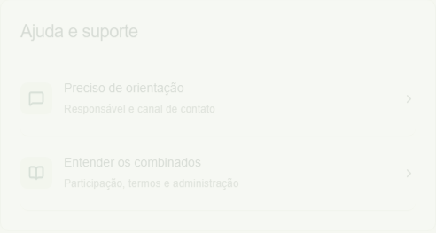
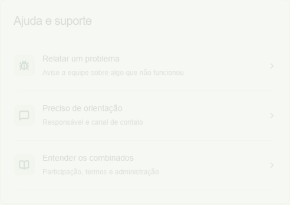
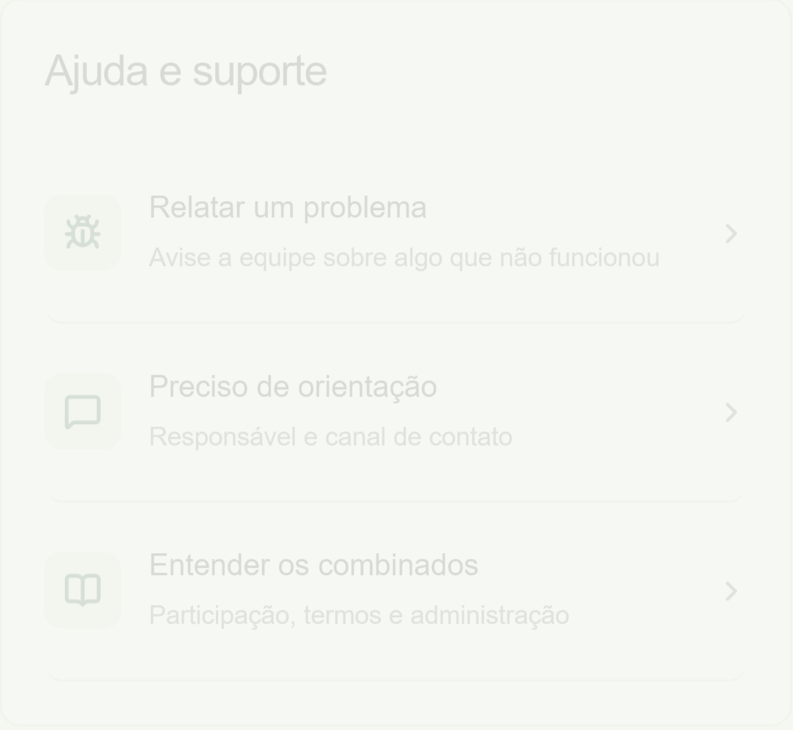
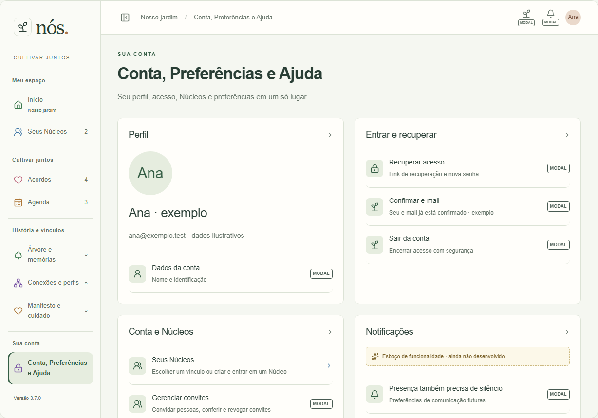
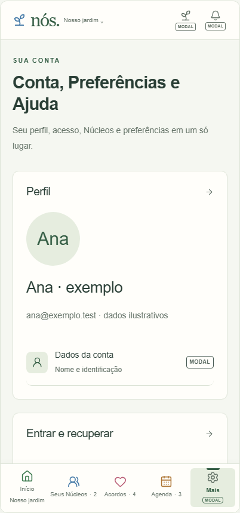
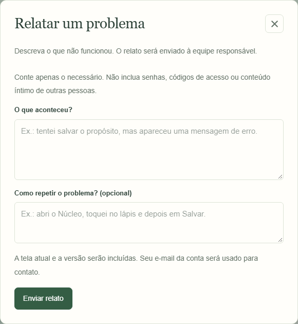
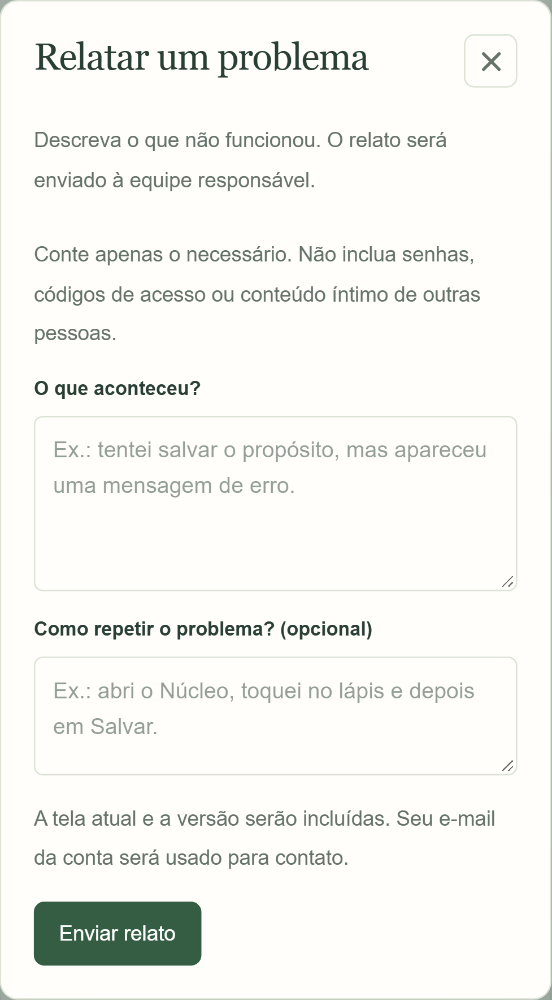
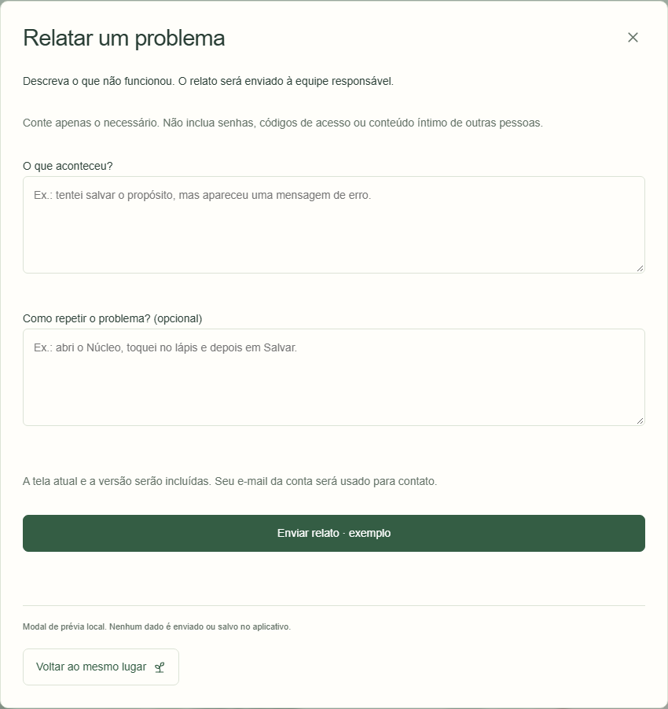
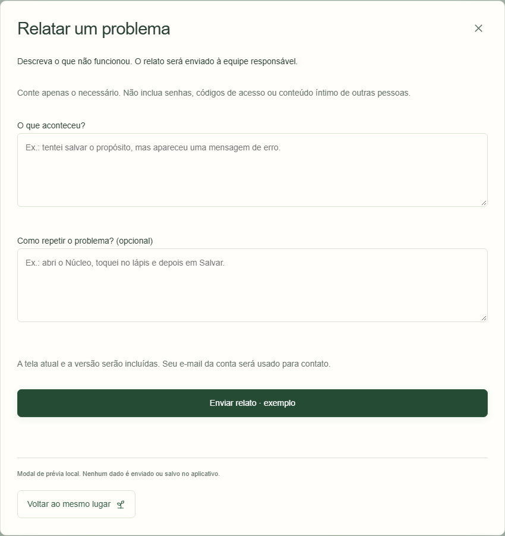

Implementação e SMTP local validados; conexão TLS e autenticação SMTP reais aprovadas após atualização da chave. Versão3.7.0 finalizada localmente. Sem publicação ou prova de recebimento externo. Capturas funcionais iniciadas durante3.6.3 preservadas.
Chromium desktop1280×720/Pixel7 393×727; teste adicional320px. Aplicativo em3200, Supabase local e Mailpit isolado. Dados descartáveis. Atlas captura prévia desktop/mobile com dados ilustrativos. A composição anterior real do aplicativo mobile não foi capturada; não foi fabricada.
Modal com dois campos, destinatário oculto, fechamento por X/Escape/fora e foco preservados. No Atlas, o envio é apenas demonstrado e informa explicitamente que não enviou e-mail. Capturas de modal podem ter resolução física ampliada pelo dispositivo; layout limitado ao viewport e rolável quando necessário.









Registro completo. Não certificados Safari ou aparelho físico.